Barcelona · San Sebastián · Gaztelugatxe · Castro Urdiales · San Vicente de la Barquera · Suances · Santillana del Mar · Lagos de Covadonga · Cangas de Onís · Descenso del Sella · Ribadeo · Playa de las Catedrales · Santiago de Compostela · Logroño
Este verano hicimos una ruta por el norte de España recorriendo algunos de los paisajes más bonitos de Euskadi, Cantabria, Asturias, Galicia y La Rioja. Un viaje lleno de acantilados, montañas, playas salvajes, pintxos, sidra, cachopo, chuletón y mucha carretera.
La ruta empezó en Barcelona y la primera parada fue San Sebastián, siguió por la costa vasca hasta San Juan de Gaztelugatxe, continuó por Castro Urdiales, San Vicente de la Barquera y Suances, y luego Santillana del Mar, entró en Asturias con los Lagos de Covadonga y Cangas de Onís, hizo el Descenso del Sella, pasó a Galicia por Ribadeo y la Playa de las Catedrales, terminó en Santiago de Compostela y puso el broche final en Logroño con una ruta de pintxos por la calle del Laurel.
Mi recomendación es dormir en Cangas de Onís 2 noches para explorar bien los Lagos de Covadonga y el Descenso del Sella, y en Ribadeo 1-2 noches para la Playa de las Catedrales y la costa gallega.
🚗 Coche en el Norte: Es la mejor forma de recorrer la ruta. Las carreteras de montaña y costa son espectaculares, pero con curvas. Lleva paciencia y disfruta del paisaje.
🦑 Playa de las Catedrales: Necesitas reserva previa (gratuita) en la web oficial para acceder en verano. Los cupos se agotan rápido. Consulta las mareas: solo se puede bajar con marea baja.
🍢 Logroño: La calle del Laurel es el paraíso del pintxo. Reserva poco: ve de bar en bar y pide la especialidad de cada uno. No te llenes en el primero.
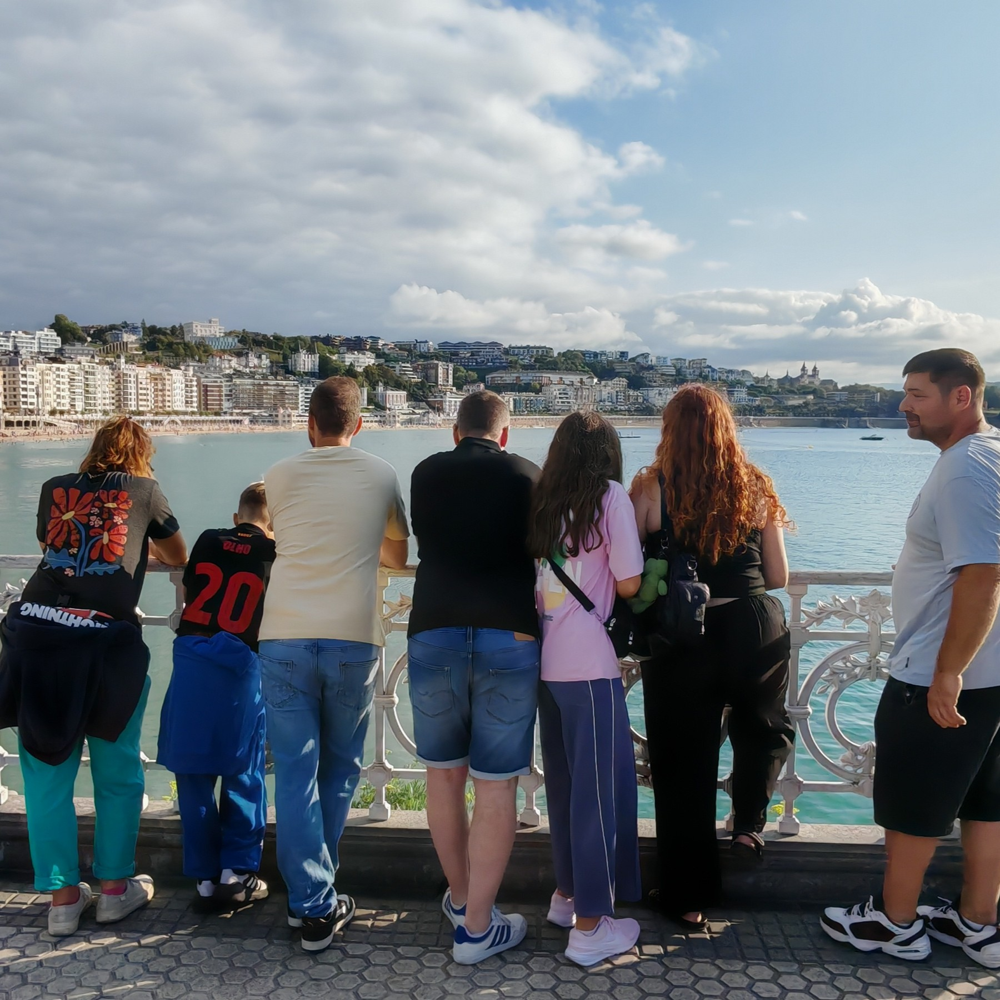
San Sebastián es una de las ciudades más elegantes y bonitas del norte de España. Su Playa de La Concha es considerada una de las mejores playas urbanas del mundo, con su forma de concha perfecta y el Monte Igueldo al fondo. El paseo marítimo es ideal para caminar al atardecer.
El casco viejo es el corazón gastronómico de la ciudad, lleno de bares de pintxos donde cada bar tiene su especialidad. No te pierdas la Parte Vieja, la Catedral del Buen Pastor, el Peine del Viento (escultura de Chillida) y el Monte Igueldo con sus vistas panorámicas.
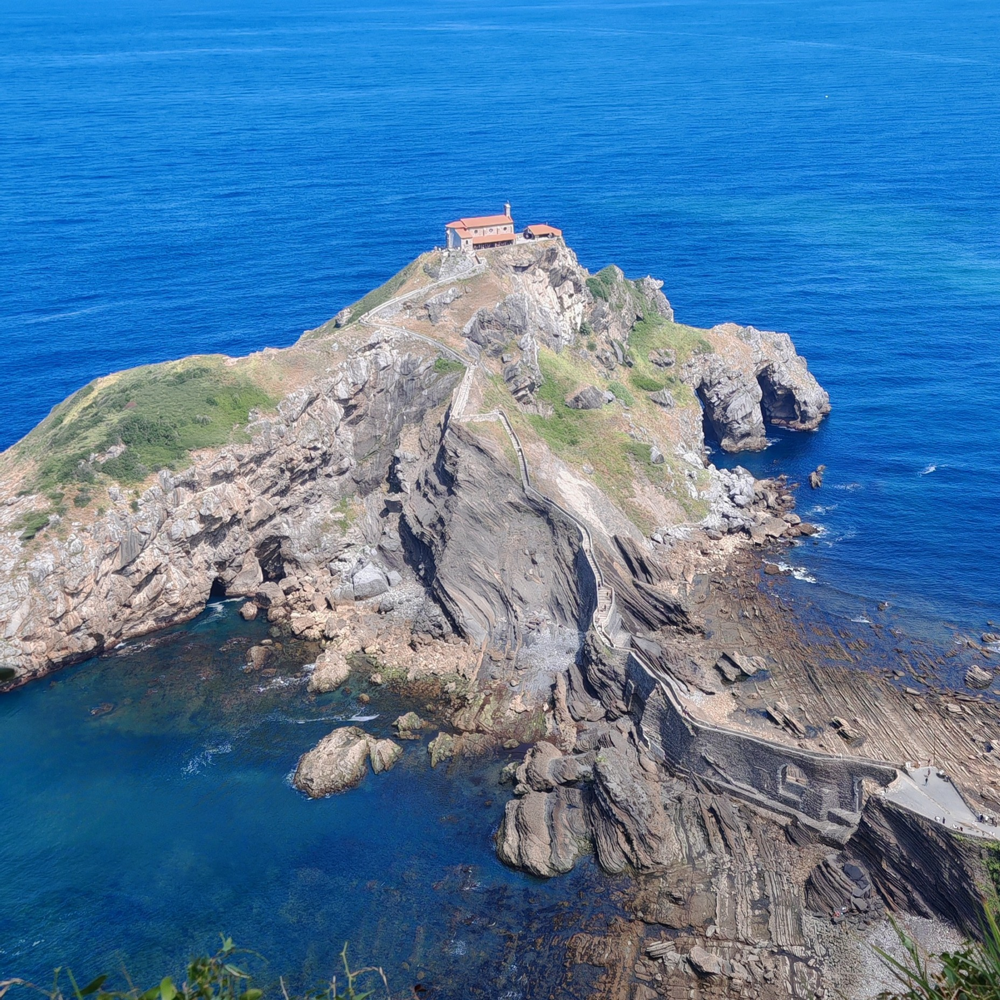
San Juan de Gaztelugatxe es uno de los lugares más espectaculares del País Vasco. Se trata de un islote conectado a tierra por un puente de piedra y 241 escalones que suben hasta una pequeña ermita del siglo X dedicada a San Juan Bautista. Las vistas del mar Cantábrico son impresionantes.
El lugar se hizo famoso por aparecer en la serie Juego de Tronos (como Rocadragón). Es una excursión de medio día: se aparca en el parking de Erribera (pago) y se camina hasta el islote. La subida es empinada pero merece mucho la pena.
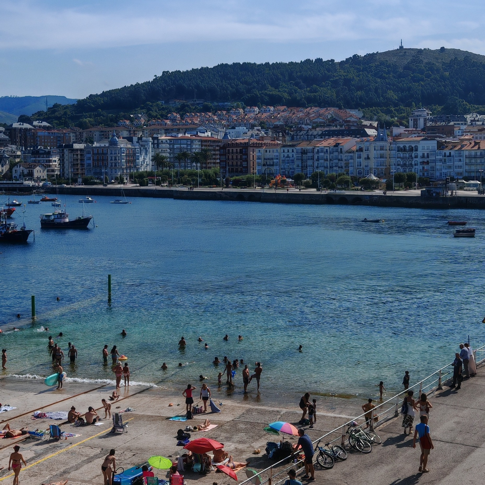
Castro Urdiales es un precioso pueblo costero de Cantabria con un puerto pesquero lleno de encanto. Su conjunto histórico está dominado por la iglesia de Santa María de la Asunción (siglo XIII), el castillo-faro y el puente medieval sobre la ría.
Es una parada perfecta para almorzar o tomar algo antes de seguir hacia Santillana del Mar. El paseo marítimo y la playa de Ostende (no la belga) son ideales para dar un paseo. El ambiente es tranquilo y auténtico.
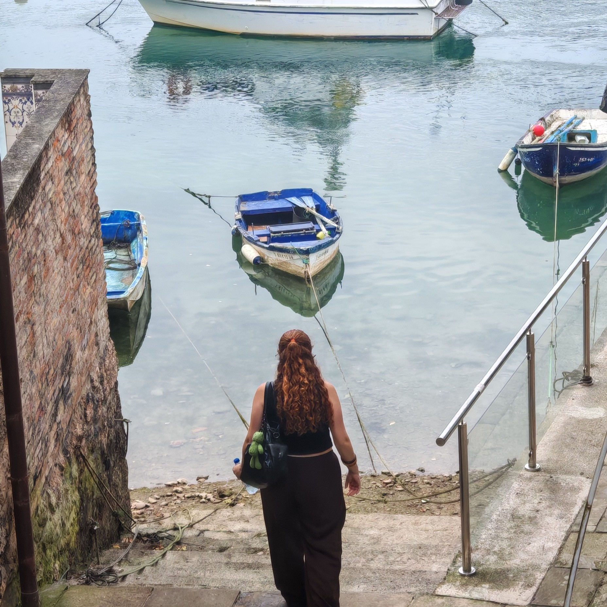
San Vicente de la Barquera es uno de los pueblos más bonitos de Cantabria. Su puente de la Maza (siglo XVI), con sus 28 arcos, es la estampa más famosa del pueblo, junto con el Castillo del Rey y la iglesia de Santa María de los Ángeles, que presiden el casco antiguo desde lo alto.
El pueblo está rodeado por la ría de San Vicente y el Parque Natural de Oyambre, con playas salvajes como Merón, Gerra y Oyambre. Es una parada perfecta para pasear, comer marisco y disfrutar de las vistas al Cantábrico. El ambiente es marinero y muy agradable.
Si vas con coche propio, hay aparcamientos en las afueras del casco histórico y junto al puerto. Es una parada cómoda y muy fotogénica dentro de la ruta, ideal para estirar las piernas y comer algo antes de seguir hacia Asturias.
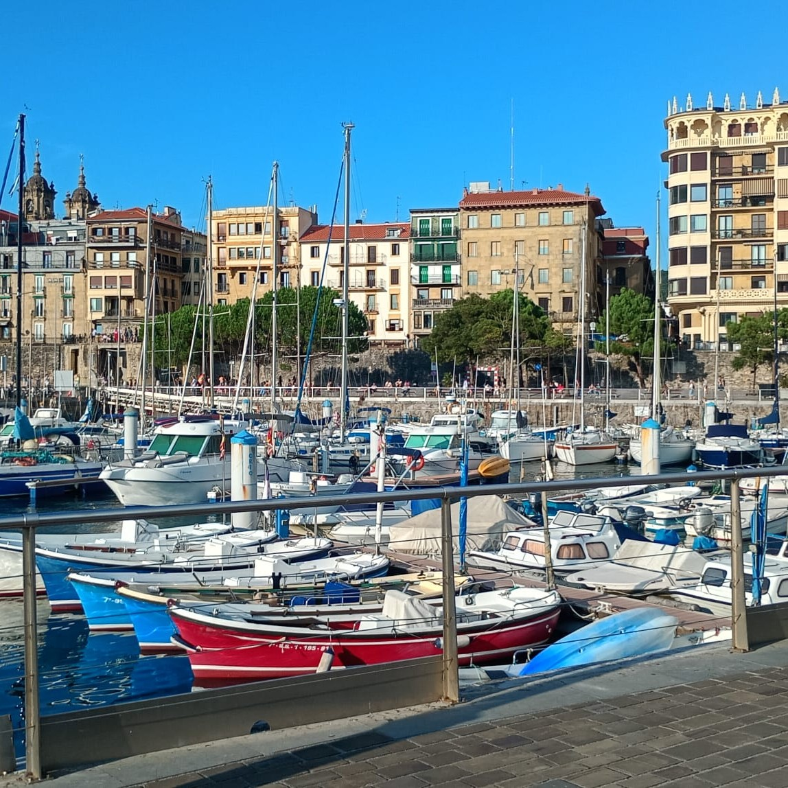
Suances es un pueblo costero de Cantabria famoso por sus playas y su ambiente surfero. La Playa de los Locos es la más conocida, con olas perfectas para el surf y un paseo marítimo con vistas espectaculares. También destacan la Playa de La Concha (la de Suances, no la de San Sebastián) y la Playa de Tagle.
En lo alto del acantilado está la Iglesia de Nuestra Señora de las Lindes y el faro de Suances, desde donde se ven unas vistas impresionantes de la costa y de la desembocadura del río Saja. El pueblo tiene buen ambiente, con restaurantes de pescado y marisco.
Si vas con coche propio, hay aparcamientos cerca de las playas y del centro, aunque en verano se llenan. Es una parada ideal para combinar con Santillana del Mar, que está a solo 10 minutos en coche.
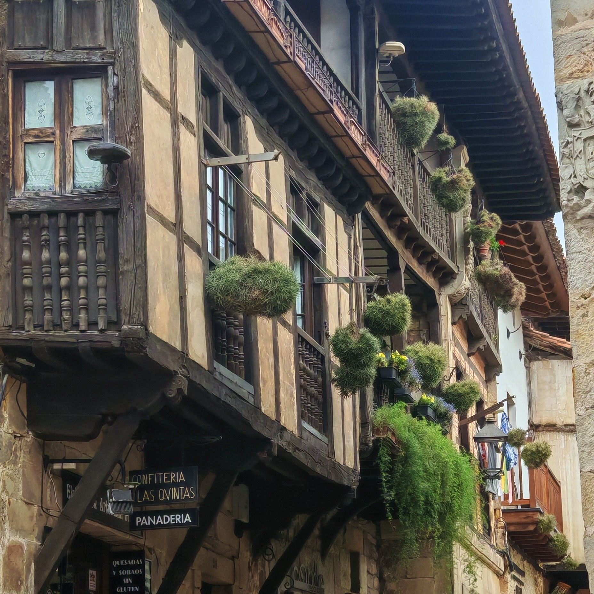
Santillana del Mar es uno de los pueblos más bonitos de España. Dicen que es "el pueblo de las tres mentiras" porque ni es santa, ni es llana, ni tiene mar. Su casco histórico medieval está perfectamente conservado, con calles empedradas, casonas de piedra y la Colegiata de Santa Juliana (siglo XII).
Es un pueblo muy turístico, pero merece la pena pasear por sus calles y visitar la Cueva de Altamira (el Museo de Altamira está a 2 km, con réplica de las pinturas rupestres). También hay muchas tiendas de artesanía y productos típicos.
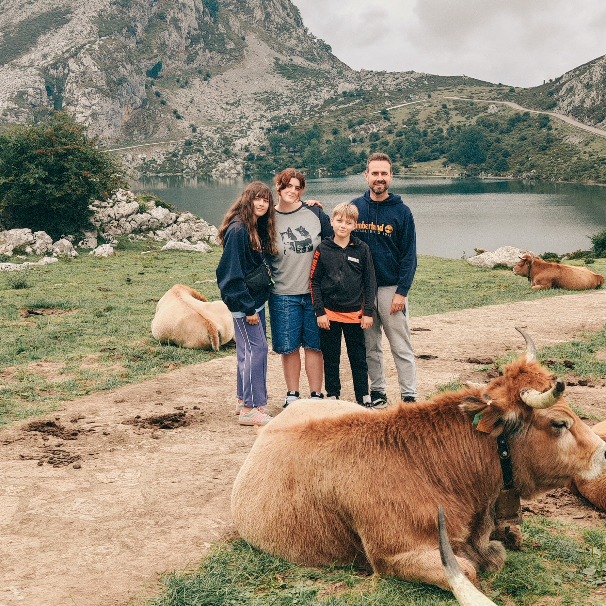
Los Lagos de Covadonga son uno de los paisajes más icónicos de Asturias. Situados a 1.100 metros de altitud en los Picos de Europa, los lagos Enol y Ercina ofrecen unas vistas espectaculares de montaña. Es un lugar mágico, con vacas pastando y niebla que aparece y desaparece.
En el camino se visita el Santuario de Covadonga (la Santina) y la Cueva de Covadonga. Se puede subir en coche (con restricciones en verano) o en bus lanzadera desde Cangas de Onís. Arriba hay un restaurante donde comimos cachopo y fabada asturiana con vistas a los lagos.
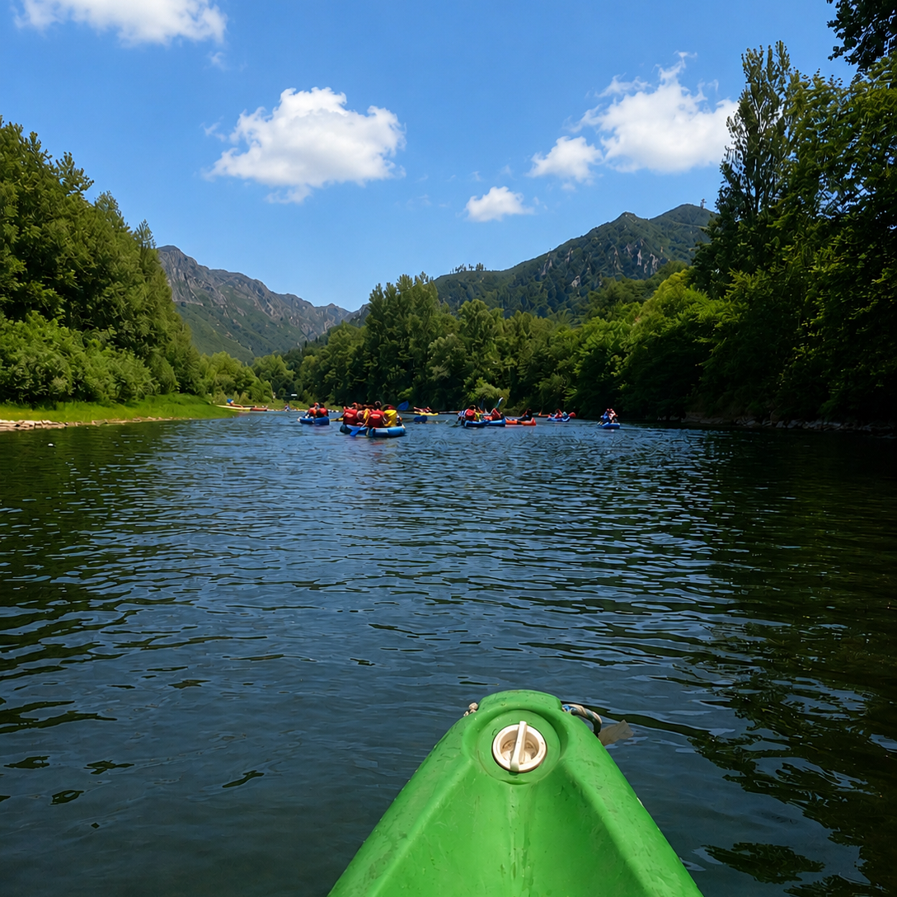
Cangas de Onís es la base perfecta para explorar los Picos de Europa. Su puente romano (en realidad medieval) sobre el río Sella es el símbolo de la ciudad, con la réplica de la Cruz de la Victoria colgando de él. Fue la primera capital del Reino de Asturias.
El pueblo tiene un ambiente animado, con muchas sidrerías y restaurantes. Aquí comimos chuletón y cachopo en La Parrilla del Sella. Es el punto de partida para el Descenso del Sella y para subir a los Lagos de Covadonga.
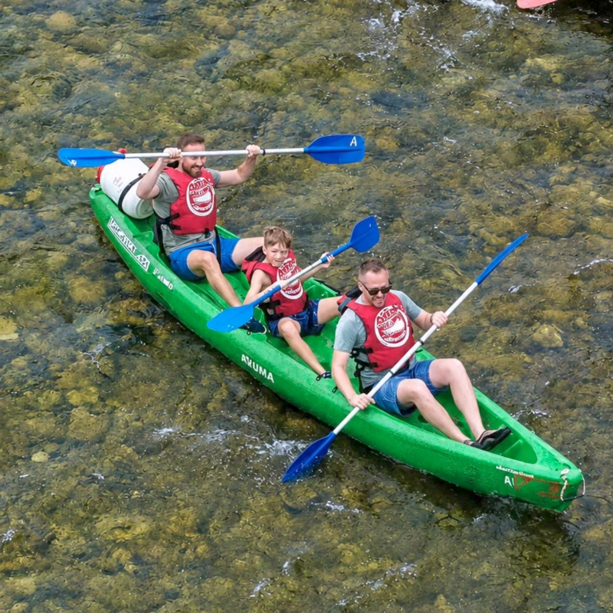
El Descenso del Sella es una de las actividades más divertidas del norte. Consiste en bajar el río Sella en canoa desde Arriondas hasta Ribadesella, unos 15 km de recorrido con rápidos suaves y paisajes preciosos. Es apto para todos los públicos.
La ruta dura entre 3 y 4 horas (dependiendo de las paradas). Hay empresas de alquiler de canoas que incluyen el transporte, el chaleco y la canoa. Es una experiencia imprescindible si vas en verano. Se puede combinar con una comida en Arriondas o Ribadesella.
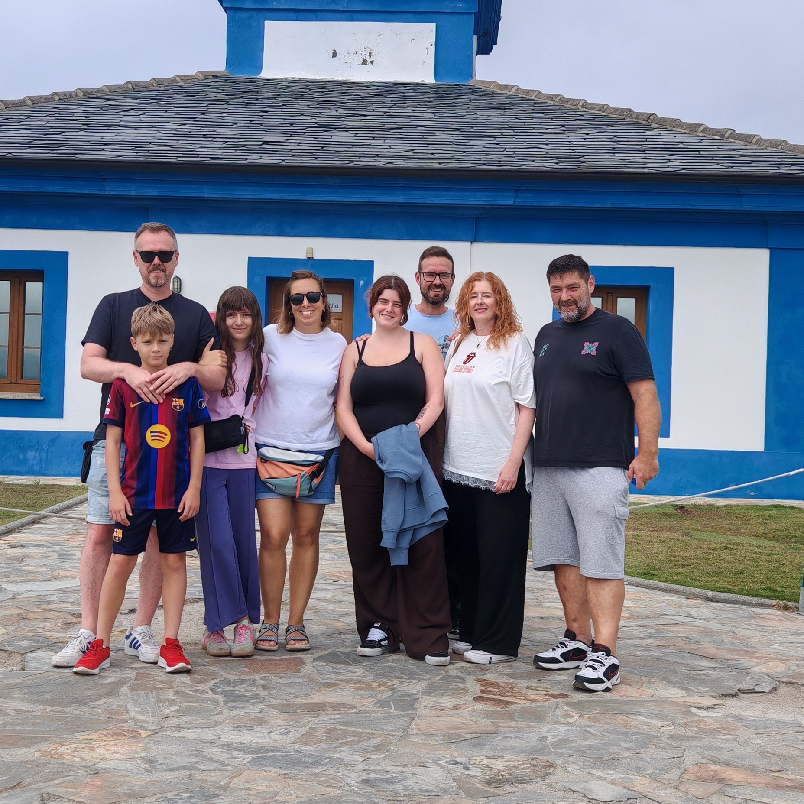
Ribadeo es un pueblo marinero de Lugo, puerta de entrada a Galicia. Su puerto pesquero, el faro de Illa Pancha y las vistas de la ría del Eo son espectaculares. Es la base ideal para visitar la Playa de las Catedrales.
Aquí comimos en la Pulpería Mar de Rinlo y en Rosa Lar Ribadeo. El pulpo a la gallega estaba espectacular. El pueblo tiene ambiente marinero y buenos restaurantes de marisco. No te pierdas el Mirador de la Atalaya.
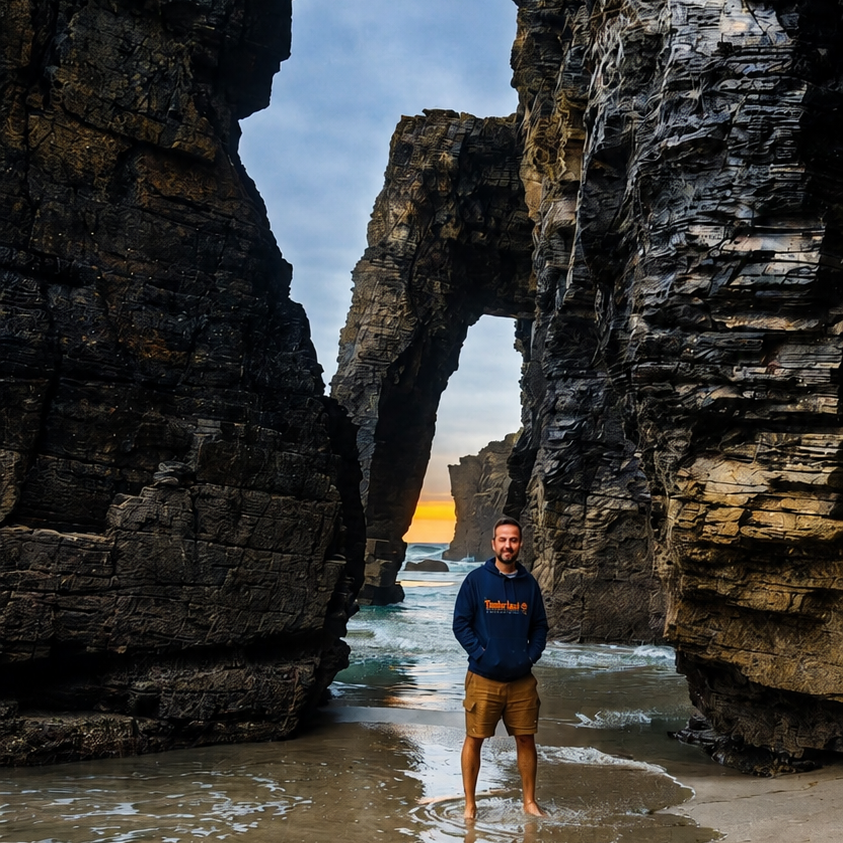
La Playa de las Catedrales (Praia de Augas Santas) es uno de los arenales más espectaculares del mundo. Sus arcos naturales de pizarra y acantilados de más de 30 metros crean un paisaje único, especialmente con marea baja, cuando se puede caminar entre las rocas.
Es imprescindible reservar online (gratuito) para acceder en verano y Semana Santa. Solo se puede bajar con marea baja. Consulta las tablas de mareas antes de ir. El atardecer desde el mirador es espectacular.
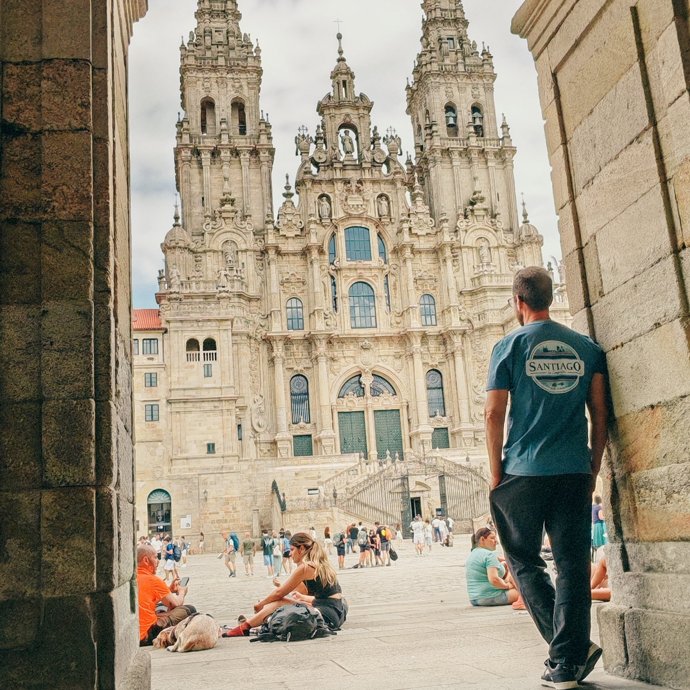
Santiago de Compostela es el final de todos los Caminos. Su Catedral, con la tumba del apóstol Santiago, es el centro espiritual de la ciudad. El Pórtico de la Gloria y el Botafumeiro son impresionantes. El casco histórico es Patrimonio de la Humanidad.
Además de la Catedral, no te pierdas la Plaza del Obradoiro, el Mercado de Abastos y el ambiente universitario. Aquí fuimos a Bar La Tita, famoso por su tortilla de patatas. La ciudad tiene una energía especial.
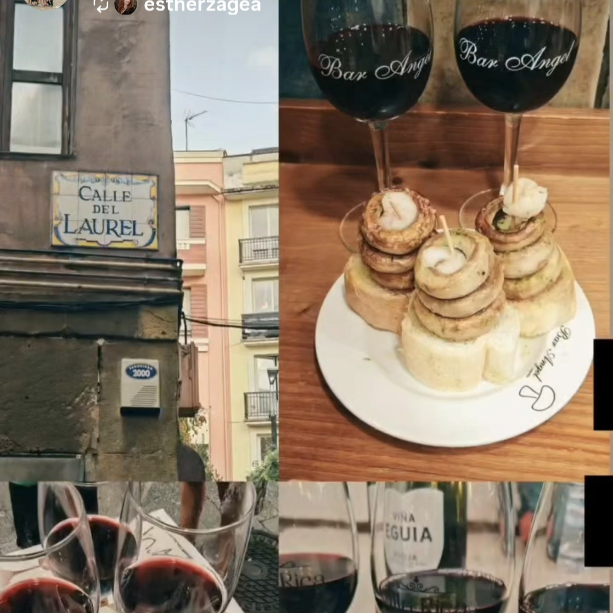
Logroño es la capital de La Rioja, famosa por su calle del Laurel, una calle llena de bares de pintxos donde cada uno tiene su especialidad. Es el broche final perfecto para una ruta por el norte. El ambiente es increíble, especialmente los fines de semana.
Además del tapeo, Logroño tiene la Concatedral de Santa María de la Redonda, el Puente de Piedra sobre el Ebro y el Museo de la Rioja. Y si te gusta el vino, puedes visitar bodegas cercanas (Haro, Briones).
La Ruta por el Norte es un viaje para disfrutar con calma. No intentes verlo todo en pocos días. Dedica al menos 10-12 días para hacerla completa.
Los Lagos de Covadonga y la Playa de las Catedrales requieren reserva previa en verano. Infórmate antes de ir.
El Descenso del Sella es una experiencia única. Reserva con antelación y lleva ropa que se pueda mojar.
La gastronomía del norte es espectacular: pintxos en San Sebastián, cachopo y fabada en Asturias, pulpo en Galicia y pintxos en Logroño. No te saltes ninguna parada gastronómica.
{kind=link}
{kind=link}
{kind=link}
{kind=link}
{kind=link}
{kind=link}
{kind=link}
{kind=link}
{kind=link}
{kind=link}
{kind=link}
{kind=link}
{kind=link}
{kind=link}
{kind=link}
{kind=link}
{kind=link}
{kind=link}
{kind=link}
{kind=link}